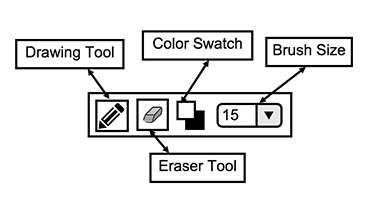
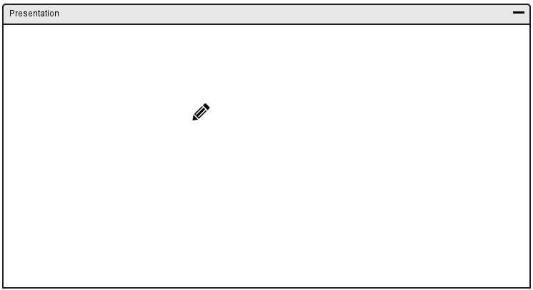
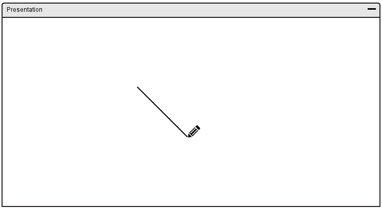

The draw tool gives the user the ability to draw on the canvas with a brush.
In response to the user clicking the draw tool icon, the overall toolbar is replaced and displays options for drawing. An overview of the draw toolbar is shown in Figure 47.

Figure 47: Draw Toolbar Overview.
The draw toolbar has several options including:

Figure 48: Before Drawing.
The user clicks and hold mouse clicker in the starting position of the drawing.

Figure 49: After Drawing.
The user releases the mouse clicker when done drawing.